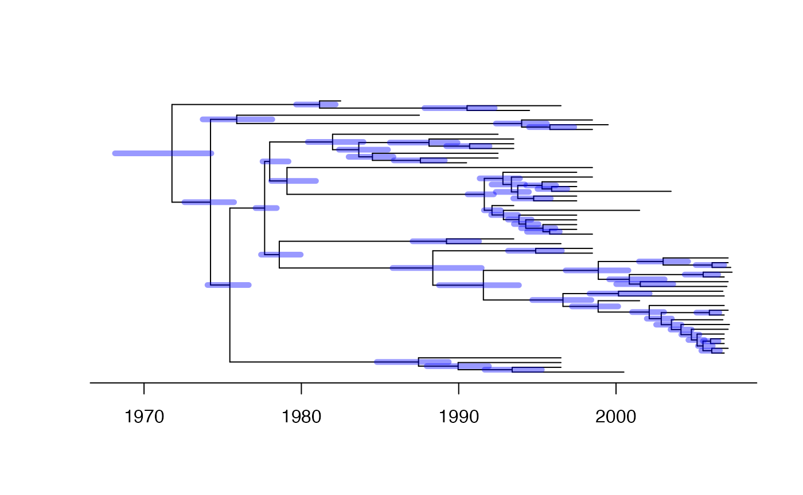

Application of BactDating on S. aureus ST239
Xavier Didelot
2025-05-19
Source:vignettes/Staph.Rmd
Staph.RmdIn this vignette we demonstrate the usage of BactDating on a dataset
of Staphylococcus aureus ST239 published by Harris et al (2010). The
data for this example can be loaded using the command
data(staph). This will load in your environment the object
staph which is made of two parts. The first part,
staph$tree, is a phylogenetic tree class phylo
from the ape package. The second part,
staph$dates, is a vector containing the dates of isolations
of the genomes. Note that this vector is in the same order as the tips
of the tree listed in staph$tree$tip.label.
Root-to-tip analysis
Let’s do a root-to-tip regression analysis:
res=roottotip(staph$tree,staph$dates)Analysis
We can run BactDating as follows. Note that here we only perform 1000 iterations of the MCMC to keep to building time of this vignette low, but in practice you should run the MCMC for as long as possible.

We can see what the MCMC traces look like:
plot(res,'trace')Let’s see where the root is likely to be:
plot(res,'treeRoot',show.tip.label=F)You can extract and plot a sample of trees as follows:
out=extractSample(res,6)
par(mfrow=c(2,3),mar=c(5,5,0.5,0.5))
for (i in 1:6) {
plot(out[[i]])
axisPhylo(1,backward = F)
}